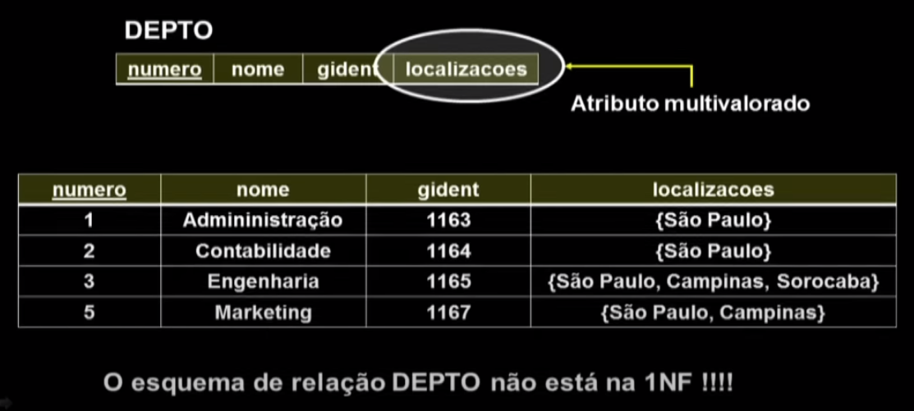
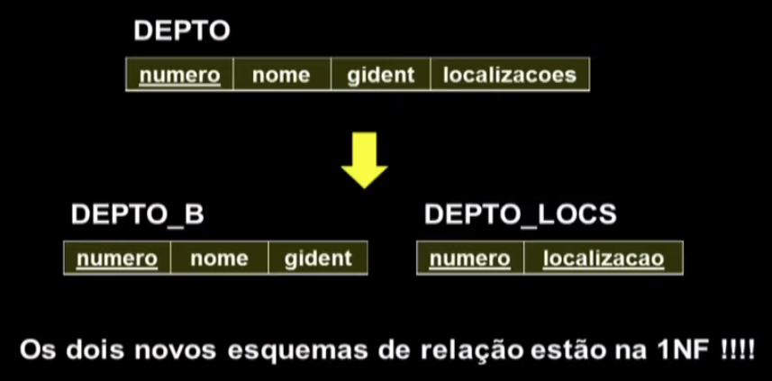
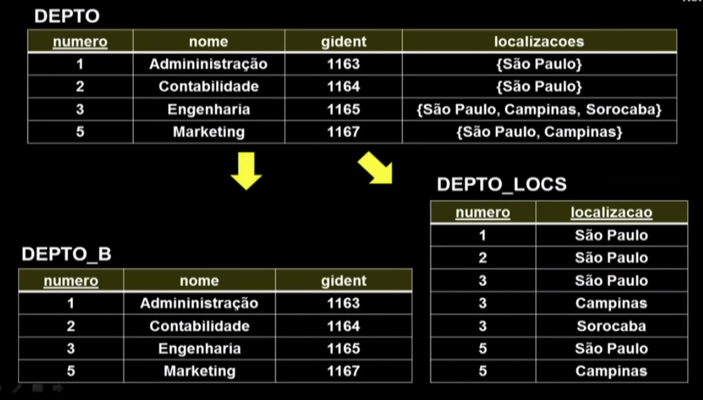
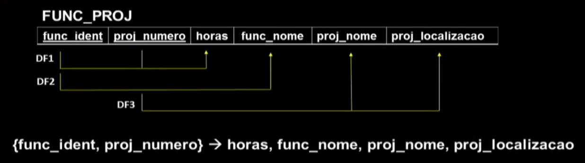
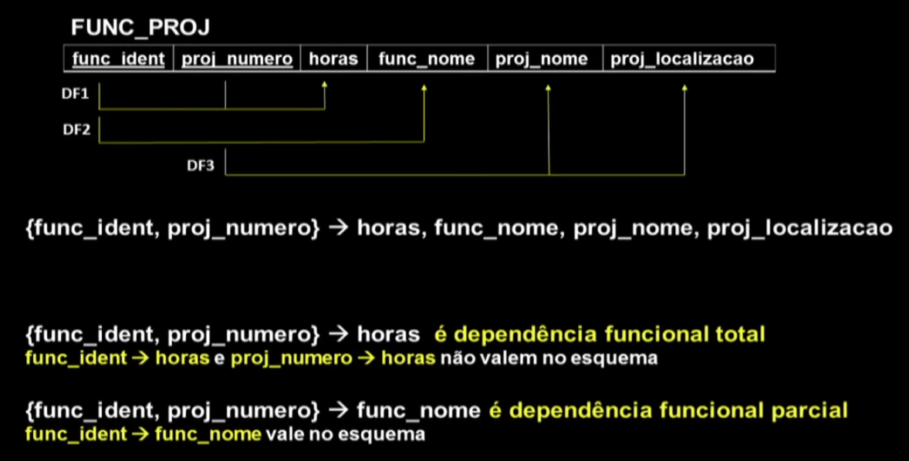
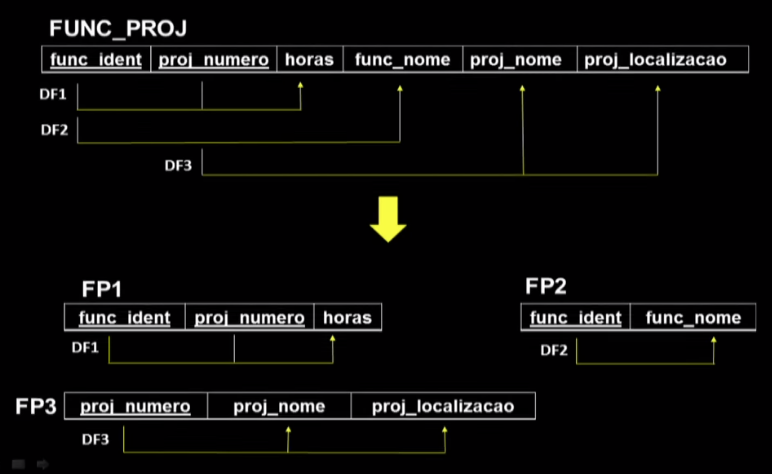

Disciplinas
-
BANCO DE DADOS-T01-2024-1 Concluído
Materiais
Vídeo 2 - Bancos de Dados - Aula 19 - Formas Normais – Parte I. sendProfessor ministrante: Sarajane Peres.
Conteúdo
Formas Normais.
Formas Normais.
- A qualidade de um projeto de banco de dados pode ser medida a partir da verificação da forma normal que ele alcança.
- Primeira forma normal.
- Segunda forma normal.
- Terceira forma normal.
- Boyce-Codd Normal Form - BCNF.
- O processo de normalização é dirigido pela informação referente às dependências funcionais e às chaves dos esquemas de relações.
- É um processo de análise e adequação dos esquemas de relações com o objetivo de minimizar redundâncias e anomalias de inserção, exclusão e alteração.
No processo de normalização, esquemas de relação que não satisfazem certas condições, são decompostos em esquemas de relação menores que satisfazem as tais condições e ainda possuem algumas propriedades desejáveis.
- A forma normal de uma relação é a mais alta forma normal cujas condições são atendidas pela relação.
- A forma normal de um projeto de banco de dados é aquela referente à sua relação em mais baixa forma normal.
- Considerar apenas as formas normais não garante que o projeto de banco de dados está bom. É ainda preciso considerar algumas propriedades adicionais.
O processo de normalização estudado será realizado por meio de decomposições das relações (em relações menores).
Essa decomposição deve:
Propriedade necessária.
🡿
Garantir a propriedade de junção sem perdas;
Procurar preservar as dependências funcionais.
🢄
Propriedade desejável
Primeira Forma Normal (1NF).
Não permite relações dentro de relações ou relações como valores de atributos dentro das tuplas.
O único valor permitido pela 1NF é o valor atômico.
Ex. 1:
Ex. 2:
 Normalizando...  Comparando: - Primeira Forma Normal (1NF):
- Não permite relações dentro de relações ou relações como valores de atributos dentro das tuplas.
- O único valor permitido pela 1NF é o valor atômico.
Segunda Forma Normal (2NF):
É baseada no conceito de atributo primo e dependência funcional total.
Um atributo de um esquema de relação Ré chamado ATRIBUTO PRIMO de R se ele é membro de alguma chave candidata de R. Caso contrário ele é chamado ATRIBUTO NÃO PRIMO.
Ex.:
- Segunda Forma Normal (2NF): é baseada no conceito de atributo primo e dependência funcional total.
- A dependência funcional X 🢂 Y é uma dependência funcional total se ao remover qualquer atributo A de X a dependência funcional deixa de valer.
- Ou seja, para qualquer A EX, (X - A) não determina funcionalmente Y.
- Uma dependência funcional X 🢂 Y é uma dependência funcional parcial se para algum atributo A ∈ X, (X - A) 🢂 Y
Ex.:
  Segunda Forma Normal (2NF):Um esquema de relação R está na 2NF se todo atributo não primo A em R tem dependência funcional total da chave primária (ou de qualquer chave) de R.
ou, escrevendo de uma outra forma ...
Um esquema de relação R está na 2NF se todo atributo não primo A em R não depender parcialmente de qualquer chave de R.
Ex.:
Normalizando... Estes slides estão baseados na bibliografia:
Formas Normais – Parte I.